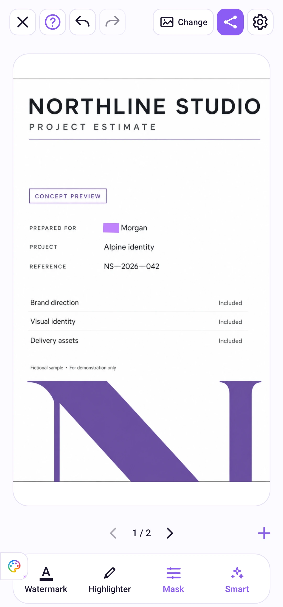

Edição de fotos
Várias fotos
Escolha de 1 a 10 fotos, edite cada uma e exporte a atual ou o grupo inteiro.
Acompanhe os passos
Selecione um tempo para ir à etapa. Use a tela cheia para ver os detalhes.
Como usar
Use as setas abaixo da imagem para trocar de foto. Em um grupo, toque em + para adicionar mais, até 10 no total. As edições existentes são mantidas. Substituir o grupo é uma ação separada.
Cada foto mantém suas coberturas, marca de texto e histórico. As posições não são copiadas entre fotos. No menu de exportação, escolha a foto atual ou todas e confira cada resultado.
O botão de ações da imagem, no canto superior esquerdo, permite limpar as edições da foto atual ou sair da edição do grupo inteiro. Ao sair, há uma confirmação se houver alterações.

